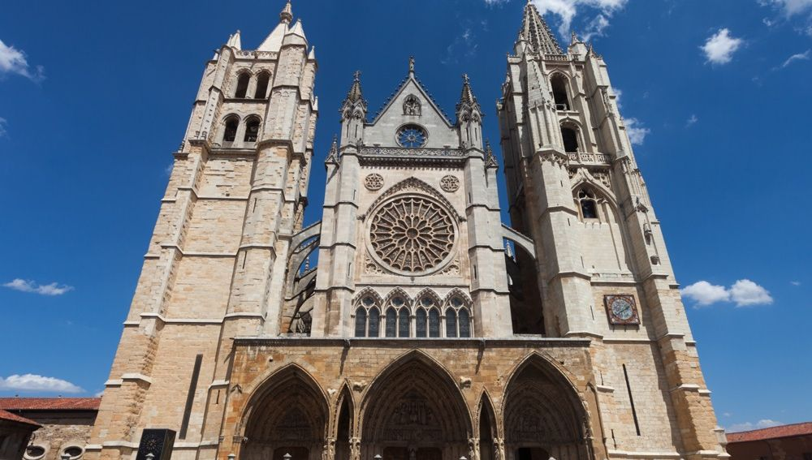
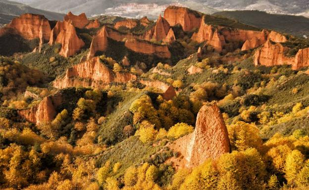

| Provincias | |
|---|---|
| Ávila | |
| Zamora | |
| Salamanca | |
| Soria | |
| Segovia | |
| Palencia | |
| Burgos | |
| Valladolid |
León es una provincia española situada en el noroeste de la comunidad autónoma de Castilla y León. Su capital es León. Limita al norte con el Principado de Asturias y Cantabria, al este con la provincia de Palencia, al sur con las provincias de Zamora y Valladolid y al oeste con Galicia, concretamente con las provincias de Orense y Lugo. Tiene una extensión de 15 581 km² y en 2018 contaba con 463 746 habitantes.
La ciudad de León está ubicada en una terraza fluvial en la confluencia de los ríos Bernesga y Torío, a una altitud de 840 msnm. Situada aproximadamente en el centro de la provincia, se encuentra en un lugar estratégico del noroeste peninsular, ya que es paso obligado para ir a Galicia y a Asturias.
u término municipal limita al norte con Sariegos y con Villaquilambre, al este con Valdefresno, al sur con Santovenia de la Valdoncina, Onzonilla y Villaturiel, y al oeste con San Andrés del Rabanedo y Valverde de la Virgen. El territorio del término municipal está representado en la hoja 161 del Mapa Topográfico Nacional.
Foto extraida de ondacero.
Las siete localidades principales son: Sahagún, León, La Bañeza, Ponferrada, Astorga, Cistierna y Villablino
Debido a su estructura montañosa, la provincia leonesa reparte su territorio entre tres cuencas hidrográficas: Cantábrico, Miño-Sil
Entre los lagos y lagunas de origen natural podemos distinguir dos tipos, los de origen glaciar y los esteparios. A los primeros corresponden, entre otros, los lagos Ausente e Isoba en Puebla de Lillo, el lago de La Baña, el lago de Truchillas o el Pozo Cheiroso en Valdeprado
Varios cauces fluviales tienen regulado su caudal mediante pantanos, embalses y presas. En la cuenca del Miño-Sil se encuentran los de La Campañana, Las Rozas, Matalavilla y Bárcena. Excepto este último, que también se usa para abastecimiento y regadío, todos ellos sirven para generar energía hidroeléctrica
En términos climáticos, la provincia de León sirve de transición entre la Meseta y las zonas montañosas. El clima predominante es el mediterráneo continentalizado, aunque matizado en algunas zonas, como el noroeste, de influencia atlántica, y la hoya berciana, de temperaturas más suaves. En general, son características una elevada amplitud térmica (desde los 12 a los 20 °C), inviernos fríos y largos, primavera y otoño cortos, heladas y veranos cortos y calurosos
La flora de la provincia de León es muy variada, con unas 3000 especies distintas que representan el 20 % de las que se pueden encontrar en la península ibérica.Las formaciones vegetales presentes muestran una diferenciación entre la llanura y la montaña, aunque en ambos dominios predominan las especies mediterráneas y de transición a la vegetación atlántica.
La provincia cuenta con una fauna rica y variada debido a su situación de transición entre el mundo mediterráneo y el eurosiberiano y entre la llanura y la montaña.Así, en cuanto a los íctidos, las aguas leonesas sustentan especies autóctonas como trucha común, tenca y barbo o alóctonas como el lucio. En relación a los distintos medios acuáticos están presentes anfibios como el tritón jaspeado, mamíferos como el desmán o la nutria, y aves como distintas especies de ánades y lavanderas o el martín pescador
La historia de la ciudad de León se remonta a la Edad Antigua, cuando a mediados del siglo I a. C.
la Legio VI Victrix estableció su campamento entre los ríos Bernesga y Torío, cerca de la ciudad astur de Lancia, y a la cual siguió la Legio VII Gemina, que permanecería hasta principios del siglo V. Incorporada en 856 al reino de Asturias, desde 910 se convirtió en capital del reino de León, dotándose de un fuero en 1017, y acogiendo acontecimientos como la celebración, en 1188, de las primeras cortes europeas
La ciudad de León surge hacia 29 a. C. como campamento militar romano de la Legio VI Victrix, en la terraza fluvial entre los ríos Bernesga y Torío, cerca de la ciudad astur de Lancia, con motivo de las llamadas guerras cántabras.A finales del siglo i, a partir de 74, el campamento es ocupado por la Legio VII Gemina, fundada por Galba, la cual permanecerá en León hasta aproximadamente principios del siglo v. Fue la única legión asentada en Hispania hasta la caída del Imperio Romano de Occidente (476), por lo que durante todo este tiempo León fue la capital militar de la Península. La ciudad perteneció al Convento Asturicense, con capital en Asturica Augusta, el cual formó parte de la provincia Tarraconense hasta el siglo iii, cuando, con la creación de la provincia de Gallaecia, fue integrado en ésta.
El trazado campamental romano original aún puede observarse en la actualidad, puesto que se conservan gran parte de las murallas que lo rodeaban en los siglos iii y iv. Alrededor de las murallas que delimitaban el campamento fue creándose un núcleo civil paralelo, la cannaba, en la que se asentaban todas las personas que se encargaban de cubrir las necesidades de los soldados. Por los restos arqueológicos se sabe que contaba con unas termas32 (con ruinas aún visibles bajo la catedral) e incluso un anfiteatro con capacidad para 5000 espectadores a extramuros, actualmente enterrado bajo la calle Cascalerías
La ciudad de León fue sede regia desde la fundación del reino, con García I, a principios del siglo x, hasta la integración en la Corona de Castilla en 1230, momento en que la capitalidad del reino unificado fue itinerante y debido a ello León fue creciendo y evolucionando en su desarrollo. En esta cuestión jugó un destacado papel el Camino de Santiago, quizás la más importante vía de circulación de gentes, ideas, cultura y arte del Medievo. En el siglo x destacarían reyes como Ordoño II, que fijó la capitalidad y consagró la primera catedral en las antiguas termas romanas, donde hoy se encuentra la catedral gótica, y su hijo Ramiro II, que construyó el primer palacio en Palat de Rey y, al igual que su padre, llevó a cabo exitosas campañas contra los musulmanes. La segunda mitad del siglo es de luchas civiles en León, reyes débiles con problemas con la nobleza, y de ataques y contraataques musulmanes a la ciudad, incluyendo uno de Almanzor, que causó graves daños. La recuperación y reordenamiento de la capital llegó con Alfonso V a inicios del siglo xi, así como el comienzo de la victoria cristiana en la península. Avanzado el siglo, hay un cambio de dinastía, destacando a Fernando I como rey iniciador de la basílica de San Isidoro, construida con motivo del traslado de los restos de San Isidoro a la ciudad y del panteón real del reino. Su sucesor Alfonso VI que pasó a los anales de historia por el avance en la reconquista con la conquista de Toledo y, sobre todo, por su relación política con el Cid, fue cuyo reinado presenció la consagración de la nueva catedral románica iniciada por Urraca en 1073, donde presumiblemente trabajarían los mismos canteros que en la basílica.
En el siglo xii, y tras el paso de la primera reina, Urraca I, destaca su hijo Alfonso VII, que avanzó notablemente la reconquista y llegó a coronarse emperador de toda Hispania en la antigua catedral leonesa. Es en este siglo cuando el geógrafo y viajero árabe Edrisi escribió lo siguiente sobre León: «Allí se practica un comercio muy provechoso. Sus habitantes son ahorradores y prudentes». Tenemos también noticia de León a través de diversos códices, entre ellos el Codex Calixtinus, manuscrito que, entre otras cosas, contiene información sobre la ruta que los peregrinos seguían hacia Santiago de Compostela. Con todo ello, la ciudad conoció el desarrollo de nuevos barrios, en ocasiones extramuros de una ciudad que ya se quedaba pequeña, y casi siempre a la vera del camino de los peregrinos, que accedían a la ciudad por la llamada Puerta Moneda.
Tras la muerte de Alfonso VII, este dividió los reinos de León y Castilla entre sus hijos; Fernando II reinó en León, destacando la reconquista de Extremadura. Su sucesor y último rey privativo de León fue Alfonso IX, que convocó las primeras cortes de Europa, con participación de todos los estamentos sociales, en la basílica de San Isidoro en 1188. Será en 1230, cuando tras su muerte la corona leonesa y la castellana recaen sobre la cabeza del monarca Fernando III el Santo, algo que supondría para León la pérdida de la capitalidad fija, pues esta se vuelve itinerante.No supondría no obstante el fin de la prosperidad de la ciudad, que durante todo el siglo xiii mantuvo un gran empuje comercial y crecimiento demográfico. Es en esta época cuando a mediados de siglo, Alfonso X el Sabio ordenó el derribo de la vieja catedral y la construcción de la actual, de estilo gótico.
En estos siglos, León vive un estancamiento de su población, algo normal en las ciudades del interior. El leve incremento poblacional en la ciudad no se debe a un incremento de la actividad industrial o comercial, sino al empuje de la agricultura de las zonas rurales que rodean la ciudad. Prueba de la decadencia comercial e industrial de la ciudad es lo acontecido con las fábricas de hilados. En 1749, bajo los auspicios del secretario de Estado, José de Carvajal y Lancaster, se levanta un edificio en el llamado Campo de San Francisco para ampliar la fábrica de hilaturas que ya funcionaba en la calle de la Rúa, pero en 1769 esta fábrica ya había dejado de funcionar. El empeño puesto por el secretario de Estado contó con la oposición de las autoridades locales. Según Real Orden de 24 de enero de 1786, a instancias del obispo Cuadrillero, se crea en este edificio un hospicio, cuya obra se completa en 1793. También hubo intentos, con la ilustración, de modernizar la ciudad y sanearla con la construcción de nuevas fuentes y equipamiento público, así como con la creación de una de las Sociedades Económicas de Amigos del País en la ciudad.
La ciudad de León, con 5500 habitantes (aunque algunos viajeros, como el reverendo J. Townsend, aumenten la cifra a 6170 almas) era, junto con Zamora, una de las ciudades menos pobladas de la región y de la meseta. Las malas condiciones higiénicas y el hacinamiento contrarrestaban el avituallamiento regular y asegurado por los municipios en épocas de crisis. Además, en épocas de malas cosechas, atraían a mendigos, vagabundos y marginados de los amplios alrededores que, agrupados en las puertas de conventos y obispados, esperaban unas relativas garantías de no morir de hambre, introduciendo en la ciudad epidemias que aumentaban la tasa de mortalidad.
Sin embargo, tras la unión del Reino a Castilla, la ciudad inicia un largo periodo de decadencia que sólo acabará con la llegada del ferrocarril, en el siglo XIX, y con la industrialización, ya en el siglo XX.
La diversidad cultural de las distintas comarcas leonesas propicia unos festejos caracterizados por su gran variedad de formas, ceremonias, bailes y atuendos, aunque todos ellos con un sustrato histórico y cultural común.
Es frecuente que, bajo celebraciones cristianas, aparezcan costumbres paganas y así, por ejemplo, santuarios y ermitas se levantan sobre lugares sagrados de origen pagano.
Por otra parte, debido al carácter agrícola de la provincia, son los ritmos agrarios los que marcaron el calendario festivo, encuadrándose en ellos las distintas celebraciones cristianas. En todas ellas, los dos elementos más tradicionales son el pendón y el ramo
Cronológicamente, en torno a Navidad y Año Nuevo, pervive la tradición del ramo, consistente en un armazón de madera que se engalana con pañuelos, velas, rosquillas, frutas, cintas de colores y elementos vegetales, al cual se canta una vez llevado a la iglesia.
Con la llegada de la primavera tienen lugar por toda la provincia numerosas romerías y rogativas entre las que destacan la Pascua en Cacabelos o San Jorge en San Esteban de Nogales, ambas declaradas de Interés Provincial
Son también tradicionales las fiestas del Voto, frecuentes en el Páramo, que expresan la gratitud por los favores que el pueblo hubiese recibido de manos de la Virgen o algún santo. De carácter similar es la fiesta de Las Cabezadas, en la capital provincial, por la que la corporación municipal, en agradecimiento por distintos milagros, acude a la Basílica de San Isidoro con un cirio y cuatro hachas de cera, donde entablan una discusión dialéctica sobre el carácter de la ofrenda, despidiéndose del Cabildo con tres reverencias
Video extraído del canal de Yotube "Recetas de cocina casera"
Un prodigio natural de tal belleza y magnitud que te hace sentir minúsculo. Esta podría ser una buena definición de los Picos de Europa, el primer parque nacional que se creó en España. A caballo entre Asturias, Cantabria y León, es en tierras leonesas donde se localizan las cumbres de mayor altitud y los relieves más escarpados de la cordillera Cantábrica. Y junto a ellos, aldeas de alta montaña, numerosos bosques -hayedos principalmente-, y un importante legado etnográfico con siglos de historia, que acrecienta el valor cultural de sus dos valles.
Entre los atractivos del Valle de Valdeón, destaca la Ruta del Cares, una de las hoces más espectaculares de España que puedes recorrer sin apenas dificultad en muchos tramos siguiendo su famosa garganta. Otras citas imprescindibles son el mirador del Tombo, que te regalará una magnífica panorámica de este precioso valle, los hórreos de Soto de Valdeón y la vertiente leonesa del desfiladero de Los Beyos.
La Reserva de la Biosfera de Los Argüellos, situada en la montaña central de León, es otra de las joyas de esta provincia. Un territorio que aúna bosques, hoces, valles kársticos, cuevas de gran belleza y playas fluviales en las que darte un refrescante chapuzón.
Y si lo que quieres es disfrutar de un enclave único de estalactitas, estalagmitas y coladas, reserva un hueco en tu agenda para explorar la Cueva de Valporquero. Te puedo asegurar que recorrer este espacio, esculpido por el agua a lo largo de más de un millón de años, es una experiencia inolvidable. Luces y sombras, inesperados volúmenes, salas cinceladas con mil detalles que disparan la imaginación… Además, si te gusta la espeleología, podrás recorrer el Curso de Aguas, tres kilómetros de pura aventura que vivirás entre galerías, cascadas y toboganes.
Nuestro recorrido por la naturaleza en León nos conduce ahora al Alto Bernesga, una zona de transición entre la España mediterránea y la atlántica que cuenta con una interesante diversidad paisajística y etnográfica. Además de las sendas de la trashumancia que vertebran su territorio, por esta Reserva de la Biosfera también discurre el milenario Camino del Salvador, una variante del Camino de Santiago que transcurre junto al río Bernesga. En esta ruta de peregrinación se alza la Colegiata de Santa María de Arbás del Puerto, uno de los ejemplos más notables del románico leonés.
Otro de los atractivos de esta encrucijada de caminos es el Faedo de Ciñera. Este mágico bosque de hayas centenarias, perfecto para recorrer con niños, es uno de los parajes más bonitos de León. Un escenario de leyenda salpicado de preciosos recovecos, arroyos, paredes de roca y pasarelas de madera que, gracias al empeño de los lugareños, luce un fantástico estado de conservación. Pero no es el único espacio natural de esta reserva que te recomiendo visitar. El desfiladero de las Hoces del Villar y el hayedo de Cabornera, con su espectacular paraje de La Boyariza, también son un espectáculo para los sentidos.
Según cuentan, los reyes de León acudían a las tierras de Babia para descansar y alejarse de las intrigas de la corte. Cuando los súbditos, inquietos por su ausencia, preguntaban por el monarca siempre recibían la misma respuesta “está en Babia”, dando a entender que estaba ensimismado en su lugar de recreo. Aunque hoy sencillamente diríamos que nos vamos de escapada para desconectar, el significado de esta expresión sigue vigente. La belleza y la tranquilidad que reinan en esta Reserva de la Biosfera te dejarán embelesado y con ganas de repetir.
Esta Reserva de la Biosfera, que toma su nombre de las cuencas de los ríos Omaña y Luna, es la más grande de León. 81.000 hectáreas que se traducen en decenas de experiencias de ecoturismo en las que naturaleza, cultura y conservación van de la mano.
Al oeste de la Cordillera Cantábrica, en un valle fruto de la erosión de la cabecera del río Sil, encontrarás otro feudo de la naturaleza leonesa: la Reserva de la Biosfera Valle de Laciana. El valor de esta tierra, de altas cumbres y extensos bosques, es extraordinario. Y no solo a nivel paisajístico. También es un área de vital importancia para dos especies en peligro de extinción: el oso pardo y el urogallo. De hecho, en Caboalles de Arriba -una pedanía de Villablino- podrás visitar el Centro de Interpretación del Urogallo que muestra la singularidad biológica y los recursos culturales de esta reserva, entre los que destaca la vida en las brañas. Y es que todo el valle está salpicado de estas zonas de pasto de alta montaña en cuyas cabañas vivían los pastores que cuidaban del ganado hasta la llegada de las primeras nieves.
Hablar de los Ancares Leoneses es hablar de un destino fascinante que nos invita a viajar en el tiempo hilvanando su dilatada historia. Aquí podrás recorrer pueblos y pequeñas aldeas, como Campo del Agua, Balouta o Balboa, que aún conservan sus ancestrales pallozas, y sumergirte en la cultura castreña en castros como el de Chano, que se asienta en las tranquilas laderas del valle de Fornela. También podrás visitar Vega de Espinareda para admirar la monumentalidad neoclásica del Monasterio de San Andrés, y, de paso, darte un baño en la playa fluvial de Valle de Finolledo. O callejear por el precioso conjunto histórico de Villafranca del Bierzo siguiendo los pasos de los peregrinos del Camino de Santiago.
Todo ello, en una Reserva de la Biosfera jalonada de cumbres, ríos de aguas cristalinas y profundos valles que demandan ser descubiertos caminando o practicando algún deporte al aire libre. ¿Un ejemplo? Si lo tuyo es el senderismo, anímate a conquistar el Puerto de Ancares. Tu recompensa será contemplar una hermosa panorámica de estas tierras y, además, podrás conectar con otras rutas que coronan cumbres como el Pico Mustallar o el Penalonga.
Foto extraida de elcorreo.com
Una de las tradiciones mas importantes de León es la Semana Santa.
La tradición de la Semana Santa leonesa se remonta al siglo XVI, y ya desde el Siglo XIII se tienen noticias de la asistencia de la Corporación Municipal “bajo mazas” a la Solemne Procesión Oficial del Santo Entierro, en la tarde noche del Viernes Santo, donde pujan la Virgen de la Soledad, junto con sus braceros. También la pluma de Gustavo Adolfo Bécquer describió el impresionante encuentro entre la Dolorosa Y San Juan, en la mañana del Viernes Santo, a la vera del Consistorio Viejo, en la Plaza Mayor. Y es que la Semana Santa leonesa es inagotable en momentos emotivos y en la belleza de sus imágenes.
A lo largo de díez días, desde la espectacular salida en la tarde del Viernes de dolores (20:00 h) de la Virgen del Camino, conocida popularmente como la del Mercado, hasta la suelta de palomas el Domingo de Resurrección en la Plaza de la Catedral, leoneses y visitantes comparten en esta Semana Santa singular una experiencia inigualable.
Video extraido del canal de Yotube "La 8 Leon."
Dentro del casco antiguo de León encontrarás el barrio Húmedo, uno de los barrios de tapas y copas más famosos de España.
El barrio Húmedo está entre la calle Ancha, una de las más famosas de León, la calle de la Rúa, Caño Badillo y Las Cercas.
Otro de los símbolos históricos que encontramos en la ciudad de León es, sin duda, sus murallas romanas, que en la actualidad delimitan el casco antiguo. De origen romano y con trazas medievales, esta muralla , declarada Monumento Histórico Artístico, está considerada como una de las más antiguas que se conservan en España,
Los tramos que se conservan te darán una imagen del contorno cuadrangular del casco viejo de la ciudad.Una vez disfrutada la visita a la Muralla Romana de León, lo mejor será que la recorras, y si te animas la Ruta del León Romano te está esperando.